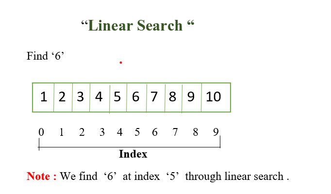
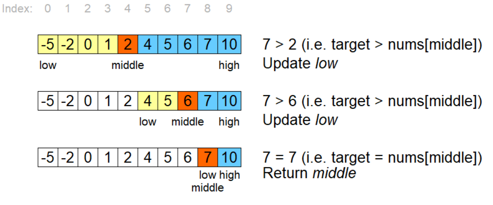

Linear Search: Linear search is the simplest searching algorithm. It works by checking every element in the list sequentially until the target element is found or the entire list is traversed.

Algorithm Steps:
Start at the first element of the array.
Compare the target element with the current element.
If a match is found, return the index of the element.
If no match is found after checking all elements, return -1 to indicate the target is not in the list.
TIME AND SPACE COMPLEXITY
Time Complexity: O(n), as it checks each element in the array.
Space Complexity: O(1), as it operates in-place without using extra memory.
CODE
#include <iostream>
using namespace std;
int linearSearch(vector
for (int i = 0; i < arr.size(); i++) {
if (arr[i] == target) {
return i;
}
}
return -1;
}
int main() {
vector
int target = 22;
int result = linearSearch(arr, target);
if (result != -1) {
cout << "Element found at index " << result << endl;
} else {
cout << "Element not found" << endl;
}
return 0;
}
Binary Search: Binary search is a more efficient searching algorithm than linear search. It works on sorted arrays by repeatedly dividing the search interval in half.

Algorithm Steps:
Start with two pointers, one at the beginning and the other at the end of the array.
Calculate the middle index.
If the middle element is the target, return the middle index.
If the target is smaller than the middle element, move the right pointer to the middle minus one.
If the target is larger, move the left pointer to the middle plus one.
Repeat this process until the target is found or the pointers cross, indicating the element is not in the array.
TIME AND SPACE COMPLEXITY
Time Complexity: O(log n), as the search space is halved at each step.
Space Complexity: O(1) for iterative implementation, O(log n) for recursive implementation due to the call stack.
CODE
#include <iostream>
using namespace std;
int binarySearch(vector
int left = 0, right = arr.size() - 1;
while (left <= right) {
int mid = left + (right - left) / 2;
if (arr[mid] == target) {
return mid;
} else if (arr[mid] < target) {
left = mid + 1;
} else {
right = mid - 1;
}
}
return -1;
}
int main() {
vector
int target = 22;
int result = binarySearch(arr, target);
if (result != -1) {
cout << "Element found at index " << result << endl;
} else {
cout << "Element not found" << endl;
}
return 0;
}
KEEP GOING!! JUST ONE LAST STEP..